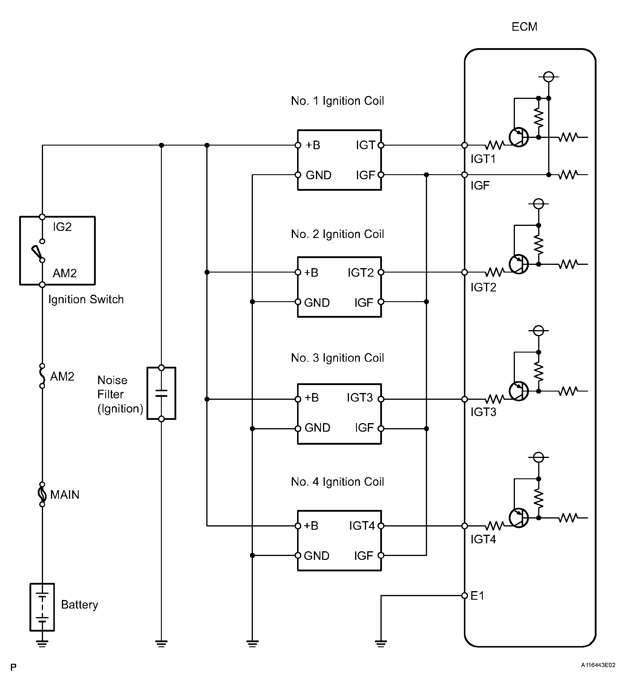

DTC P0351 Ignition Coil "A" Primary / Secondary Circuit; DTC P0352 Ignition Coil "B" Primary / Secondary Circuit; DTC P0353 Ignition Coil "C" Primary / Secondary Circuit; DTC P0354 Ignition Coil "D" Primary / Secondary Circuit: Wiring Diagram

Courtesy of © TOYOTA, LICENSE AGREEMENT TMS1002